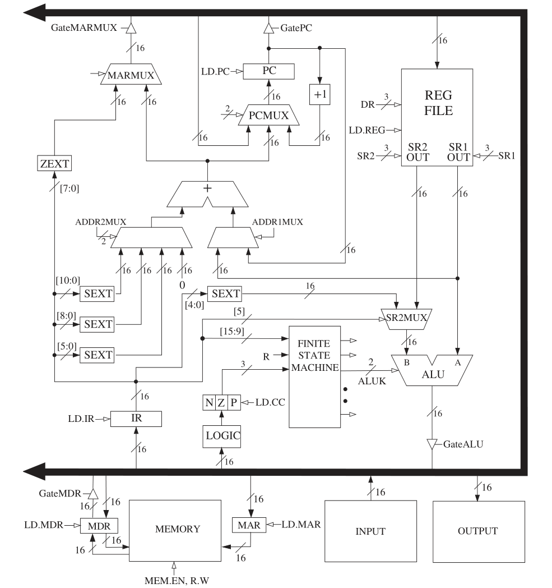

计算机程序
计算机程序是一系列指令。每种指令都精确定义一项计算机需要执行的工作。
冯·诺伊曼架构实现了此机制：
- 内存：程序所在；程序的数据来源。
- 计算单元：执行指令。
- 输入设备：程序的数据来源。
- 输出设备：输出程序执行结果。
- 控制单元：决定指令的执行顺序。
内存
读取内存某一位置的内容，先加载其地址到内存地址寄存器(MAR)，再去内存中寻址。目标内容最终加载到内存数据寄存器(MDR)。
写入值到内存某一位置，先加载目标位置的地址到MAR，加载待写值到MDR，再去内存种寻址。最终，内存会把MDR内容写入MAR所含地址指向的位置。
计算单元
现代计算机的计算单元已变得成熟而复杂，为各类型计算都配备了专门的子单元。为简单起见，目前只学习算术逻辑单元(ALU)。
ALU可执行的操作有：ADD, SUBTRACT, 逻辑运算。ALU按字(Word)处理数据，例如ADD接收两字并产出一字。
当今处理器的字长多为64比特。LC-3的字长是16比特。
为方便连续运算，计算单元有一系列寄存器作为计算结果中转站。寄存器的大小一般等于ALU可处理数据的大小，即一字。
控制单元
指令是逐步执行的，control unit keeps track of both where we are within the process of executing the program and where we are in the process of executing each instruction.
指令寄存器(IR)保存当前正在执行的指令；指令指针保存下一条指令的地址，出于历史原因，此寄存器又称程序计数器(PC)。
指令处理
冯·诺伊曼架构的核心思想是：
- 程序和数据都是内存中的二进制码。
- 控制单元一次执行一条指令。
指令执行的构成：
- 操作码：表示指令该做什么。
- 操作对象：指令所操作的数据。
指令类型即操作码类型，主要分成三类：
- 操作：操作数据，如LC-3的ADD, AND, NOT。
- 数据移动：在计算单元、内存、IO设备之间移动信息。
- 控制：变更指令的执行顺序。
某些ISA另有用于特殊途径的指令类型。
LC-3的指令为一字长，从右至左升序编码。Ins[15:12]是操作码，Ins[11:0]指出操作对象所在，其中有一个保留位。
指令周期
指令周期有六个阶段，每一阶段需要≥0步完成。一步耗时≥1个机器周期。
并非所有指令都必须经历以下六个阶段
-
FETCH：从内存获取下一指令，将其加载到IR。
(1) 使用PC的信息，依寻址模式加载到MAR。同时
PC += 1。(2) 访问内存，加载下一指令到MDR。
(3) 加载MDR内容到IR。
-
DECODE：查看指令，弄清楚微架构应该干嘛。解码器会处理指令的操作码。
-
EVALUATE ADDRESS：根据指令信息计算出所需地址。
像ADD和AND这种，数据IO先由寄存器处理，不直接求地址的，没有此阶段。
-
FETCH OPERANDS：获取操作对象。
比如，拿着地址去读取内存、读取寄存器信息。
当下许多微处理器将此阶段与EXECUTE合并了。
-
EXECUTE：执行指令。
-
STORE RESULT：存储结果至预定位置。
中止程序
控制单元调度一次的时间称作机器周期，它由时钟决定，故又称时钟周期。
例如，3.1 GHz Intel Core i7 每秒可执行 31.0 亿次调度。
看出来了吧？计算机的控制系统是有限状态机！通过不断执行指令，它不停地转变状态。若想停止转变，须停下指令周期，即停止时钟。
时钟信号由晶体振荡器(crystal oscillator)生成，具有周期性。此信号与运行(RUN)锁存器的输出，得到真正的时钟信号。
利用TRAP中止程序，实则清零运行锁存器。中断任务完成后，指令周期由外部命令恢复。
数据路径
在数据路径中，控制信号由有限状态机发出。
粗黑色大箭头是全局总线，负责传输1字长的数据。元件经由三态设备(三角形)向总线输送信息，保证一次只有一个设备向总线提供信息。
储存值到内存时，控制信号断言WE信号，以写入MDR的值到MAR所指位置。
ALU、寄存器文件 —— 见书P175。
PC的输入来源是PCMUX。PCMUX是一种 3入1出 的元件，输入分别来自总线、PC相关寻址、PC自增。
MARMUX控制MAR的输入源。MARMUX是一种 2入1出 的元件，输入分别来自陷阱矢量和寻址模式，输出流向全局总线。
